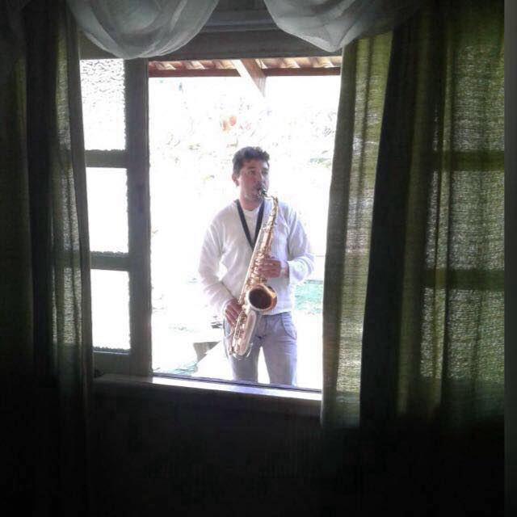

Quem sou eu
A música é a rainha das artes, a pintura é a princesa.
Sou músico, pai de família e pintor e atuo no ramo há mais de vinte anos. Amo muito o que faço. No ramo da pintura gosto de ser detalhista e tenho uma profunda paciência para fazer os recortes, embora minha hora renda bastante.